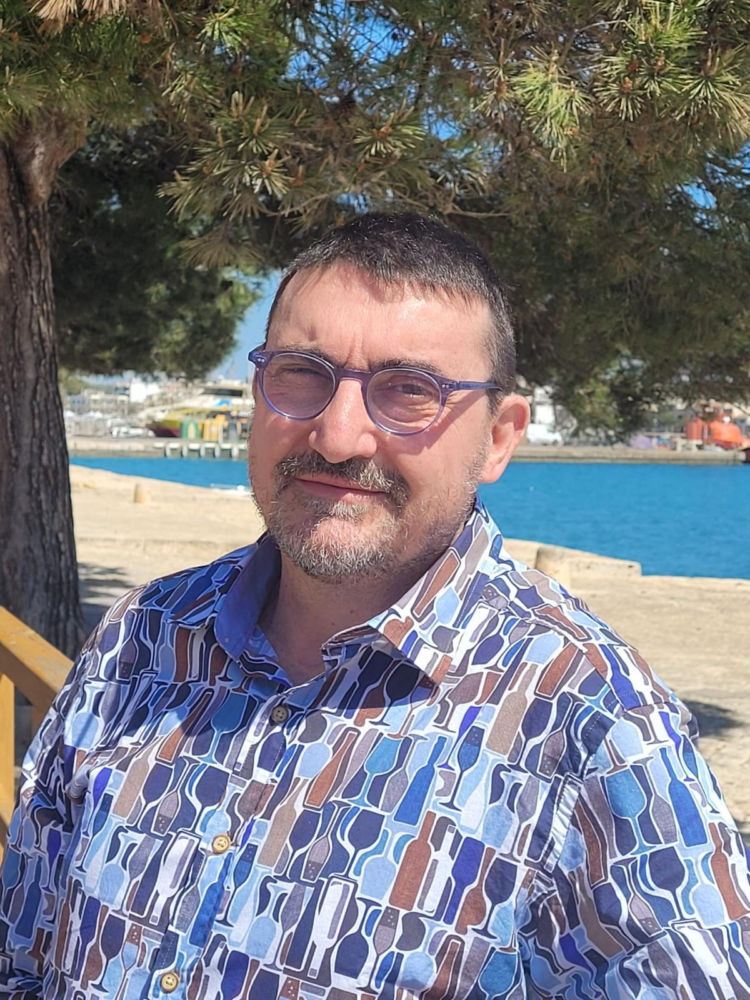

Marc J. Bonet Binimelis
Web oficial del autor.
Llumenera de
juny 1715
Un relato y el misterio envuelven los últimos días del régimen "de Sac e de Sort" de la Villa de Felanitx, en clave rural. "Llumenera de juny 1715” explica literariamente aquel drama colectivo, decidido lejos de los isleños, interesado en las Cortes Europeas y por una aristocracia que no había pisado nuestros parajes, pero donde el hambre y los conflictos que provocó estrangularon a sus habitantes.
Compra
Arcà de
Sa Lleona
Una noche, la Leona cerca de s'Horta recobra vida. Un misterio que, lejos de atemorizar la región, despierta los misterios que esconde la escultura y los vínculos con la batería de cañones construida en el monte cerca de s'Horta durante la Guerra Civil española. Solo disponible en catalán.
CompraLa cova de
l'últim gimneta
123 a. C., la cultura talayótica sufre un revés sin retorno: las Islas Gimnesias (las actuales Mallorca y Menorca) son invadidas por los romanos. La Cova de l’Últim Gimneta te traslada a esos días a través del héroe Bennabels y la hondero Kara. Un mundo único y genuino del que solo nos quedan sus ruinas en decenas de yacimientos que cobran vida en estas páginas. Una novela de romanos en la que los protagonistas son este pueblo conquistado y su cultura. Solo disponible en catalán.
Compra
Sobre l'autor
Marc J. Bonet Binimelis
Nacido en Felanitx en abril de 1966. Ha vivido toda su infancia en el lugar de s'Horta. Hijo de campesinos y mallorquín de pura cepa, se define como un defensor vehemente de la cultura y patrimonio baleares. Ha vivido en Soria, Barcelona, Sant Cugat del Vallès y, actualmente, en Palma; "Ciudad de Mallorca" como le gusta llamarla. Es licenciado en Medicina y Cirugía por la UAB, anestesiólogo. Actualmente trabaja en la Unidad de Reanimación Post Quirúrgica en el Hospital Son Llàtzer, en Palma de Mallorca. También colaboró como docente en la Unidad Docente de la Vall d'Hebron de la Facultad de Medicina de la UAB. En el ámbito no científico-médico colaboró en la revista trimestral "Papers de Son Llàtzer" en la sección de relatos de "Historias sin clínica", en un tiempo en que la cultura tenía mucho más peso, y participó en los Premios Son Llàtzer de Relato Corto en Catalán, donde fue ganador en el año 2009. Le gusta escribir poesía y novela. La obra La Cova de l'últim Gimneta es la primera novela que decide publicar en catalán.
